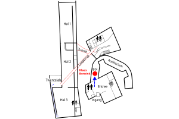
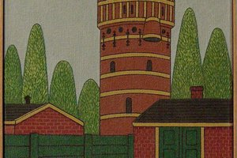
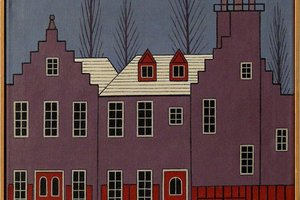
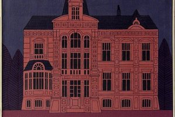
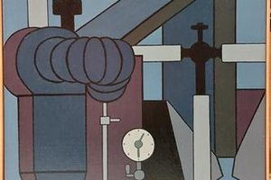
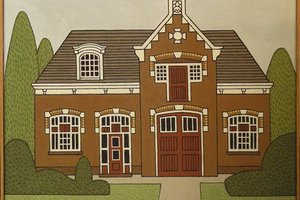
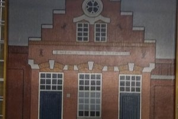
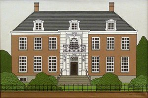

Klaas Bernink
Audiotour bij een selectie uit het werk van de Enschedese schilder Klaas Bernink
Stops in deze tour
-

Stop 1 Route naar de expositie van Klaas Bernink -
 Stop 2 1. Inleiding
Stop 2 1. Inleiding -

Stop 3 2. Watertoren hoog en droog -

Stop 4 3. Voormalig politiebureau -

Stop 5 4. Villa Kleiboer -

Stop 6 5. Sterkerij Ramie Union -

Stop 7 6. Stationsplein 15 -
 Stop 8 7. Stadhuis Enschede
Stop 8 7. Stadhuis Enschede -
 Stop 9 8. Oude gasfabriek
Stop 9 8. Oude gasfabriek -

Stop 10 9. Oude badhuis -

Stop 11 10. Muziekschool